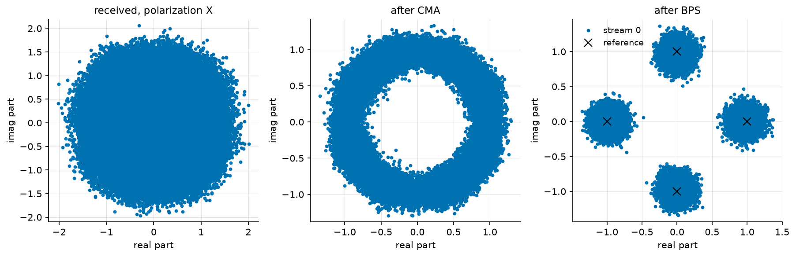

Polarization Demultiplexing: CMA and Blind Phase Search#
A coherent optical link transmits on the two polarizations of the fibre at once. The fibre repays that by mixing them: its random birefringence rotates the state of polarization by an unknown, wavelength-flat Jones matrix, and polarization-mode dispersion (PMD) delays the two principal states against each other, so each received polarization is a filtered mix of both transmitted ones. On top of it, the transmit laser’s phase noise spins the whole constellation. None of these is known to the receiver, and none is an obstacle: undoing all three blindly is the standard coherent DSP chain, and this page builds it.
What you’ll learn:
How to emulate a fibre’s polarization rotation and first-order PMD with
PMDEmulator, and a laser’s Wiener phase noise withPhaseNoise.How the blind 2x2 butterfly equalizer (CMA) separates the polarizations without training.
How blind phase search (BPS) tracks the laser phase, and which ambiguities every blind receiver leaves behind.
The problem#
Two QPSK streams are shaped and sent through one laser, one fibre and one amplifier. The phase walk is common to the two rows – one laser – while the PMD emulator, a cascade of eight random unitary sections with an RMS DGD of 10 ps (a third of the symbol at 32 GBd – the section delays add in quadrature, and the ensemble DGD is Maxwellian around that value), mixes the rows into each other:
"""Polarization demultiplexing of a PDM-QPSK link: CMA, then BPS.
Run from this directory: it writes the tutorial's figures into
../../docs/tutorials/img/.
"""
import matplotlib.pyplot as plt
import numpy as np
from comnumpy import style
from comnumpy.core import Sequential
from comnumpy.core.channels import AWGN
from comnumpy.core.compensators import BlindPhaseSearchCompensator
from comnumpy.core.filters import SRRCFilter
from comnumpy.core.generators import SymbolGenerator
from comnumpy.core.mappers import SymbolMapper
from comnumpy.core.metrics import compute_ser
from comnumpy.core.processors import Upsampler
from comnumpy.core.utils import Constellation, hard_projector
from comnumpy.core.visualizers import plot_iq
from comnumpy.mimo.compensators import BlindDualMIMOCompensator
from comnumpy.optical.channels import PhaseNoise, PMDEmulator
style.use()
img_dir = "../../docs/tutorials/img/"
# parameters
constellation = Constellation("PSK", 4)
N = 2 ** 16 # symbols per polarization
oversampling = 2
rolloff = 0.1
R_s = 32e9 # baud rate
fs = R_s * oversampling
linewidth = 100e3 # laser linewidth, Hz
dgd = 10e-12 # total mean DGD, s -- a third of the symbol
snr_dB = 15
n_discard = 4000 # symbols spent converging the equalizer
# The channel: two polarizations shaped and sent through one laser's
# phase noise, the fibre's random rotation and first-order PMD, and the
# amplifier noise. The phase walk is common to the two rows -- one
# laser -- while the PMD mixes them into each other.
chain = Sequential([
SymbolGenerator(constellation.order, name="data_tx"),
SymbolMapper(constellation, name="signal_tx"),
Upsampler(oversampling, scale=np.sqrt(oversampling)),
SRRCFilter(rolloff, oversampling, method="fft"),
PhaseNoise(2 * np.pi * linewidth / fs, name="laser"),
PMDEmulator(dgd, n_sections=8, fs=fs, seed=11, name="fibre"),
AWGN(snr_dB=snr_dB, name="noise"),
], taps=["data_tx", "signal_tx", "noise"])
chain.seed(0)
received = chain((2, N))
sent = chain.tap("signal_tx")
reference = chain.tap("data_tx")
Sampling the received field naively at the symbol rate gives the left panel of the figure below: a disc. The two polarizations sit on top of each other with a relative delay, and the laser spins the sum – there is no constellation to see, and no error rate worth measuring.
The method#
Two blind estimators, in the order a receiver runs them.
The constant modulus algorithm (CMA) adapts a 2x2 butterfly of FIR filters by gradient descent on the modulus error \(\left(|y[n]|^2 - R^2\right)^2\) (Savory, 2008). QPSK has constant modulus, so any residual modulus variation is the channel’s doing – the criterion needs no phase reference, which is what lets it converge while the constellation still spins.
Blind phase search (BPS, Pfau et al., 2009) then rotates each output by a grid of test phases, decides each against the alphabet, and retains per symbol the test phase of least windowed decision distance. It is feedforward – no loop to stabilize – and estimates the phase modulo \(\pi/2\), the symmetry of the constellation.
The implementation and the measurement#
# What the receiver faces, sampled naively at the symbol rate: the two
# polarizations are mixed by an unknown rotation, delayed against each
# other, and the constellation spins with the laser.
naive = received[:, ::oversampling]
# The 2x2 butterfly equalizer, blind (CMA): it inverts the rotation and
# the DGD without knowing either, from the constant modulus of QPSK
# alone. The first symbols are its convergence and are discarded.
cma = BlindDualMIMOCompensator(L=9, alphabet=constellation, mu=1e-3,
oversampling=oversampling, name="cma")
equalized = cma(received)[:, n_discard:]
# Feedforward carrier recovery (blind phase search): each polarization
# gets its own phase trajectory, estimated modulo pi/2.
bps = BlindPhaseSearchCompensator(constellation, name="bps")
recovered = bps(equalized)
A blind receiver leaves exactly three things unresolved, and it is worth seeing them listed rather than hidden: which output is which polarization, a quadrant rotation per output, and the small group delay of the equalizer. A deployed system resolves them with framing (Frames); here the known data plays that role, explicitly:
# --- results: the ambiguities, then the error rate ---------------------
# A blind receiver leaves three things unresolved: which output is
# which polarization, a quadrant rotation per output, and the small
# group delay of the equalizer. A system resolves them with framing;
# here the known data plays that role, explicitly, over a short probe.
probe = 2000
detected_rows = []
truth_rows = []
for row in range(2):
best = None
for source in range(2):
for quadrant in range(4):
for lag in range(-8, 9):
start = n_discard + lag
if start < 0:
continue
candidate = recovered[row, :probe] * (1j) ** quadrant
target = sent[source, start:start + probe]
error = float(np.mean(np.abs(candidate - target) ** 2))
if best is None or error < best[0]:
best = (error, source, quadrant, lag)
assert best is not None
_, source, quadrant, lag = best
print(f"output {row}: polarization {source}, rotated "
f"{90 * quadrant} deg, delayed {lag} symbols")
aligned = recovered[row] * (1j) ** quadrant
decisions, _ = hard_projector(aligned, constellation)
detected_rows.append(decisions)
length = decisions.shape[-1]
truth_rows.append(reference[source, n_discard + lag:
n_discard + lag + length])
detected = np.stack(detected_rows)
truth = np.stack(truth_rows)
ser = compute_ser(truth, detected)
print(f"SER after CMA + BPS: {ser:.2e} over {truth.size} symbols "
f"({int(round(float(ser) * truth.size))} errors)")
fig, axes = plt.subplots(nrows=1, ncols=3, figsize=(12, 4))
plot_iq(naive[0, n_discard:], title="received, polarization X", ax=axes[0])
plot_iq(equalized[0], title="after CMA", ax=axes[1])
plot_iq(recovered[0], reference=constellation,
title="after BPS", ax=axes[2])
plt.tight_layout()
plt.savefig(f"{img_dir}/one_shot_pdm_fig1.png")
output 0: polarization 0, rotated 270 deg, delayed -4 symbols
output 1: polarization 1, rotated 90 deg, delayed -4 symbols
SER after CMA + BPS: 0.00e+00 over 123072 symbols (0 errors)
{kind=link}

The figure is the whole argument, read left to right. The received polarization is a disc – two delayed streams plus a spinning phase. After the CMA it is a ring: the modulus is restored, so the butterfly has inverted the rotation and the DGD, but the criterion is blind to phase and the laser still spins the ring. After the BPS the four clouds sit on the reference crosses.
Zero errors over 123 072 symbols does not measure an error rate – at this SNR the closed form predicts \(\sim 10^{-8}\), far below what the run can resolve. What it measures is the claim this page makes: the blind chain is transparent, from a disc to a decided constellation, at the cost of 4 000 discarded convergence symbols and three ambiguities resolved by framing.
Conclusion#
You have learned how to:
Emulate polarization rotation, first-order PMD and laser phase noise with three seeded blocks.
Separate two polarizations blindly with the CMA butterfly, and read its convergence cost.
Track the carrier phase with BPS, and resolve the permutation, quadrant and delay ambiguities a blind receiver always leaves.
The natural next step is Digital Back-Propagation, where the fibre stops being unitary: attenuation, amplifier noise and the Kerr effect set the limits this page’s channel did not have.
References#
S. J. Savory, “Digital filters for coherent optical receivers,” Optics Express, vol. 16, no. 2, pp. 804-817, 2008.
T. Pfau, S. Hoffmann and R. Noe, “Hardware-Efficient Coherent Digital Receiver Concept With Feedforward Carrier Recovery for M-QAM Constellations,” Journal of Lightwave Technology, vol. 27, no. 8, pp. 989-999, 2009.
C. D. Poole and R. E. Wagner, “Phenomenological approach to polarisation dispersion in long single-mode fibres,” Electronics Letters, vol. 22, no. 19, pp. 1029-1030, 1986.